Technical expertise.
Writing your readers can use.
I’m Soumi Ganguly, a freelance technical content writer based in India, with 4+ years of experience in research-led writing.
I help businesses communicate technology and support researchers and students with structured reports, research communication and academic draft development. My work spans AI, data science, healthcare analytics, business, economics and public policy.
Whether you need a technical article, documentation, a research report or guidance on an academic assignment draft, we agree the purpose, sources, deliverables and review stages before starting. Remote enquiries are welcome from India, the UK, the USA and other international markets.
Technical content & SEO articles
Research-based explainers, tutorials and website content covering software, AI, machine learning, data science and digital transformation.
Technical documentation & business reports
Requirements specifications, structured documentation, business cases and analytical reports that connect technical detail with the reader’s needs.
Research reports & communication
Evidence-led reports, research summaries and presentations, with clear methodology, source attribution and interpretation of findings.
Academic writing & assignment support
Assignment planning, outline development, feedback on your draft, editing and referencing guidance to help you develop your own academic work.
Literature review & methodology support
Support with organising literature, comparing sources, articulating research questions and explaining an appropriate methodological approach.
Data analysis & findings presentation
Python, R, IBM SPSS, Excel, Power BI and Tableau analysis, connected to clearly explained charts, statistical findings and analytical reporting.
Bring your subject.
Let’s define the writing brief.
Share your topic, target reader, required format or word count, available sources, preferred referencing style and deadline. For academic support, include your assignment guidance and existing draft. For business content, include your audience, product information and publication goals.
A clear process.
A shared understanding.
Understand
Clarify your goals, audience, scope and deliverables.
Research
Investigate the subject, evidence and technical requirements.
Create
Develop the content, analysis or digital experience.
Refine
Review together and improve the agreed deliverables.
Clear deliverables. Defined scope.
See what's included
- Research-based articles and technology explainers
- Technical documentation and structured reports
- SEO-focused website content
- Research reports, presentations and academic draft support
The right tools for the work.
 Google Docs
Google Docs Microsoft Word
Microsoft Word Grammarly
Grammarly Markdown
Markdown Zotero
Zotero WordPress
WordPress
Your requirements determine the tools, deliverables and review stages. Scope and timelines are agreed before work begins.
Explore related workTechnical documentation & research.
Explore full research reports and presentations across technology, science, economics and public policy.
Research reports
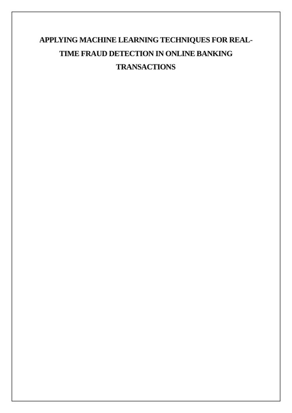
Machine learning & financeMachine Learning for Online Banking Fraud Detection
Research writing on transaction fraud detection, data preparation, classifier comparison, evaluation metrics and deployment considerations.
73 pages · Research writing sample
View sample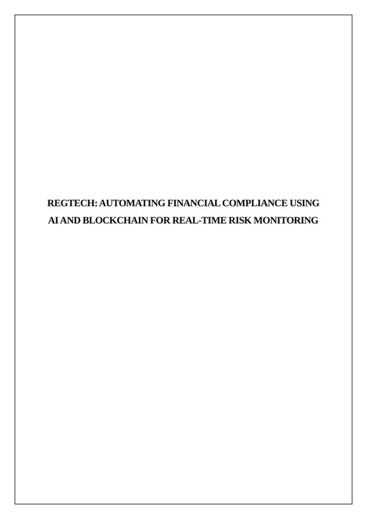
RegTech & financial systemsRegTech: AI and Blockchain for Financial Compliance
Technical research exploring AI and blockchain for financial compliance, system design and risk monitoring.
70 pages · Research writing sample
View sample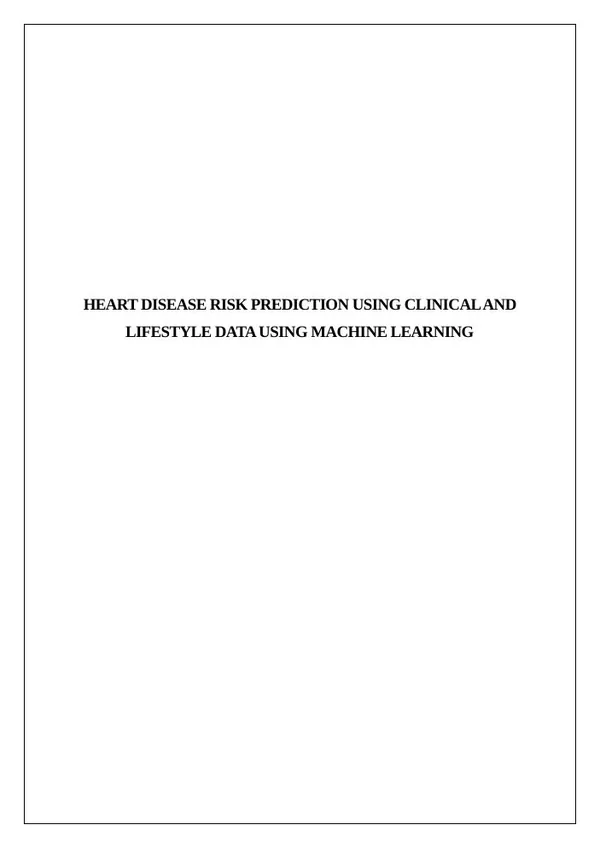
Healthcare analyticsHeart Disease Risk Prediction with Machine Learning
Research writing covering clinical and lifestyle predictors, data preprocessing and comparison of machine learning classifiers.
74 pages · Research writing sample
View sample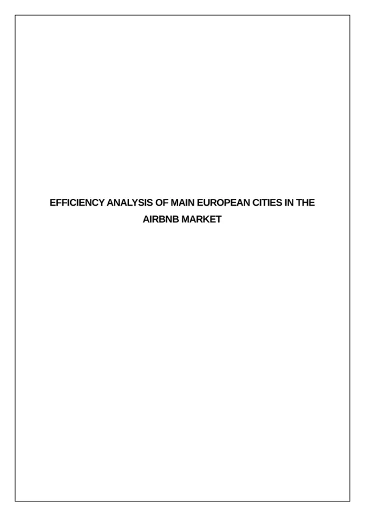
Data analyticsEfficiency Analysis of European Cities in the Airbnb Market
Research report examining the efficiency of European cities in the Airbnb market.
50 pages · Research writing sample
View sample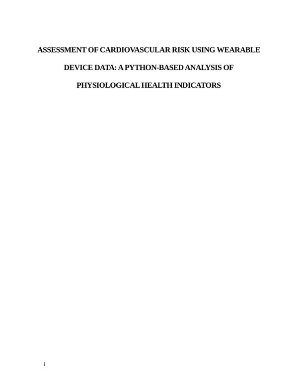
Python & health researchCardiovascular Risk Assessment Using Wearable Data
A Python-based analytical report examining physiological health indicators, cardiovascular risk, statistical analysis and data visualisation.
49 pages · Research writing sample
View sample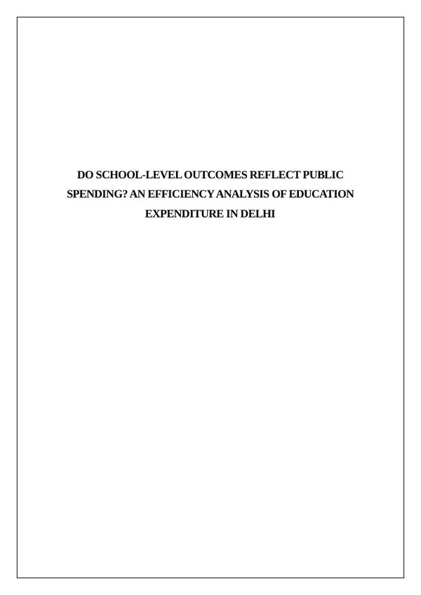
Public policy & economicsEducation Expenditure and School Outcomes in Delhi
Research writing on public education spending in Delhi, school-level outcomes, quantitative analysis and policy interpretation.
65 pages · Research writing sample
View sample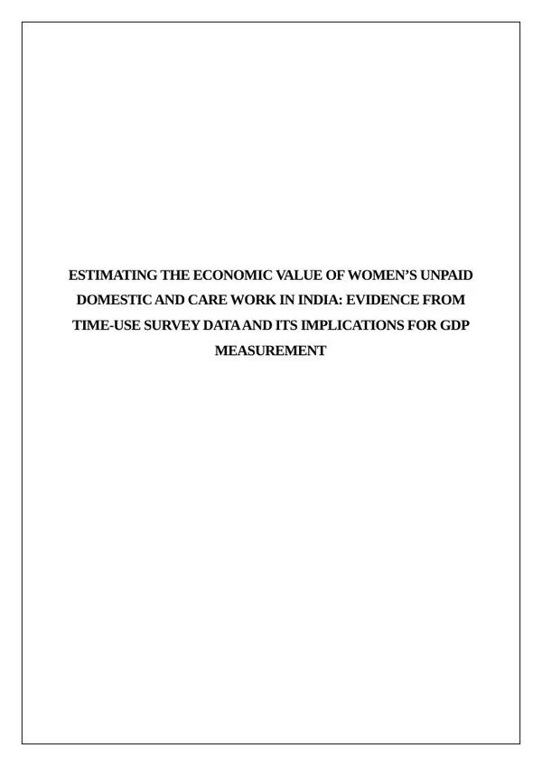
Economics & research writingThe Economic Value of Women’s Unpaid Care Work in India
Research framing and literature review exploring time-use evidence, unpaid domestic and care work, valuation approaches and GDP measurement.
19 pages · Research writing sample
View sample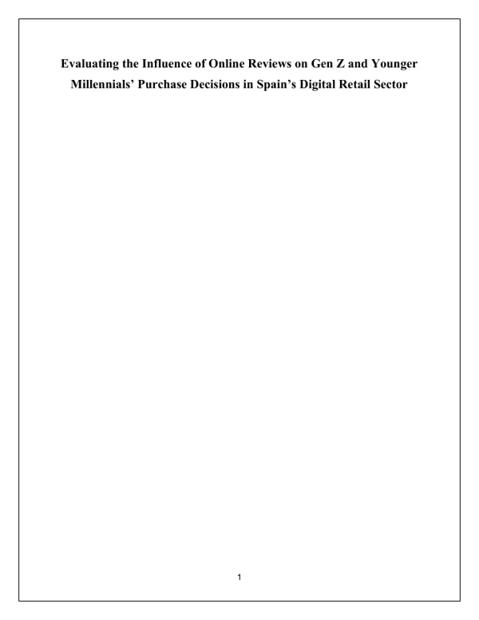
Consumer researchOnline Reviews and Purchase Decisions in Spain
Research writing on how online reviews influence purchasing among Gen Z and younger millennials in Spain’s digital retail sector.
77 pages · Research writing sample
View sample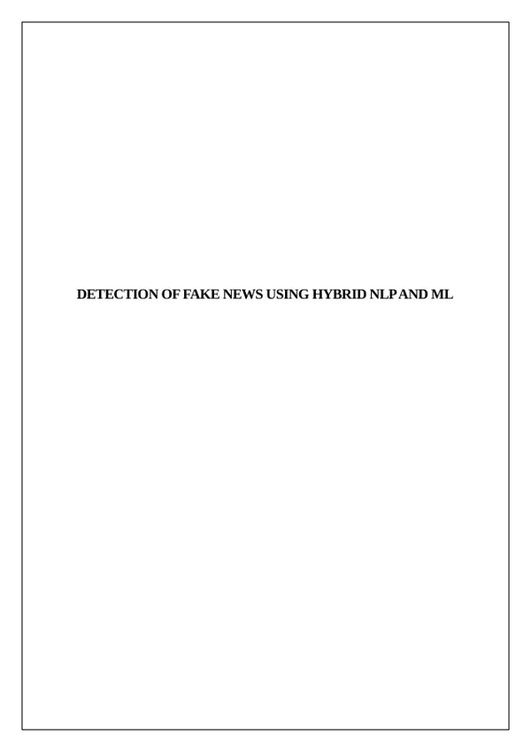
Natural language processingFake News Detection Using Hybrid NLP and Machine Learning
Technical research on hybrid natural language processing and machine learning approaches to fake news detection.
63 pages · Research writing sample
View sample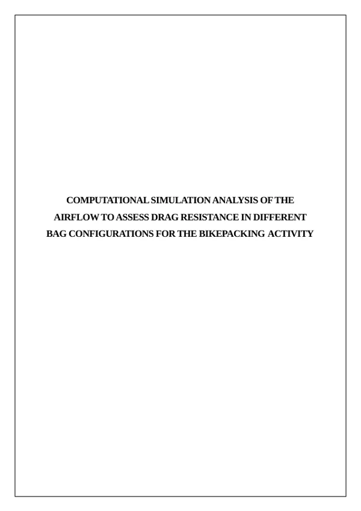
Engineering researchAirflow and Drag Resistance in Bikepacking Bag Configurations
Computational simulation report examining airflow and drag resistance across bikepacking bag configurations.
42 pages · Research writing sample
View sample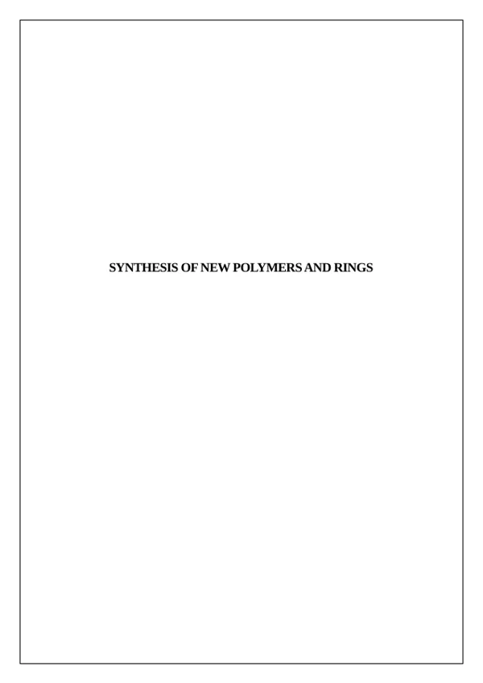
Scientific researchSynthesis of New Polymers and Rings
Scientific research report on polymer synthesis and ring structures.
41 pages · Research writing sample
View sample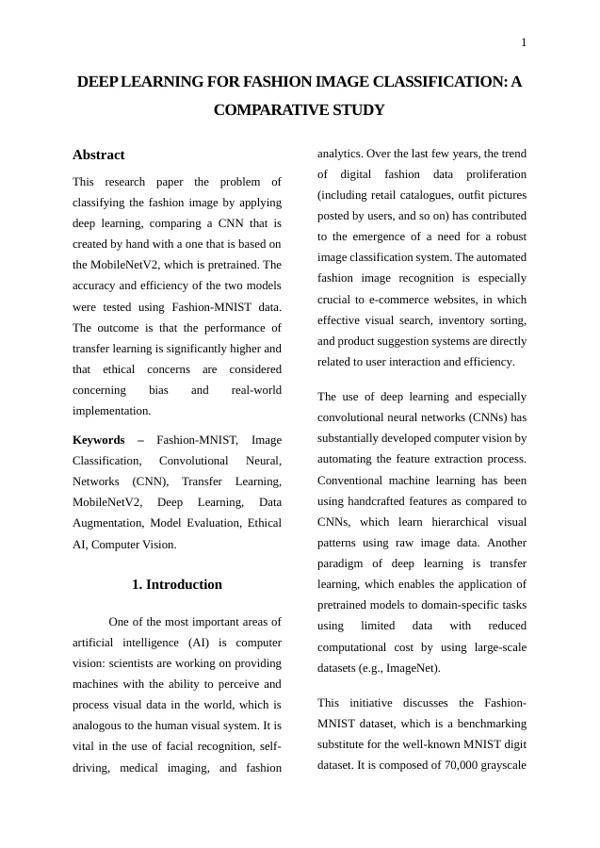
Computer visionFashion Image Classification: A Comparative Study
Comparative technical study of deep learning approaches to fashion image classification.
13 pages · Research writing sample
View sample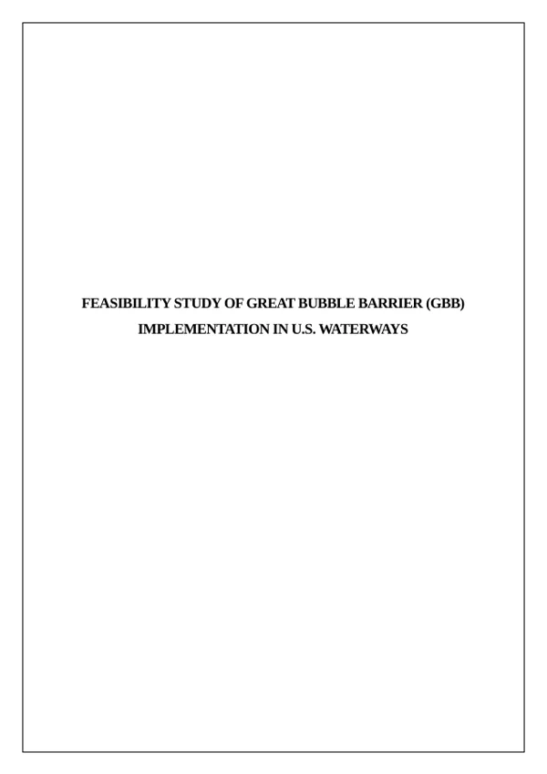
Environmental researchGreat Bubble Barrier Feasibility in U.S. Waterways
Feasibility report exploring Great Bubble Barrier implementation in U.S. waterways.
46 pages · Research writing sample
View sample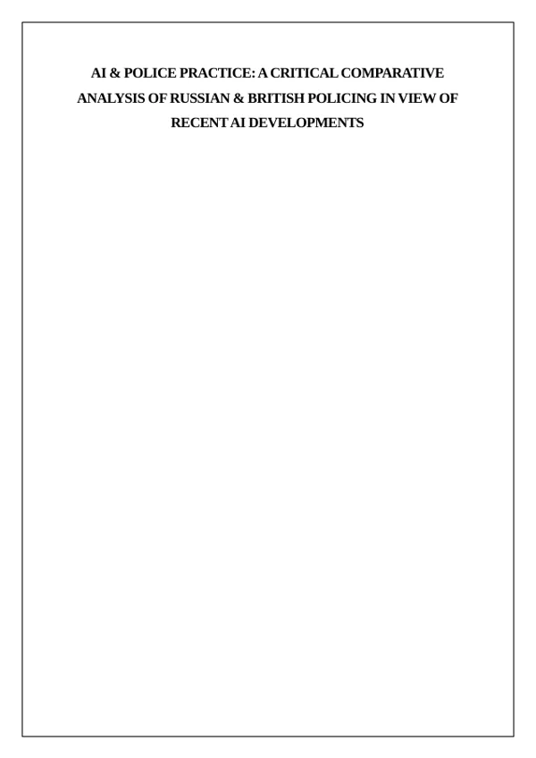
AI policy researchAI and Police Practice: Russia and Britain
Critical comparative research on Russian and British policing in the context of recent AI developments.
39 pages · Research writing sample
View sample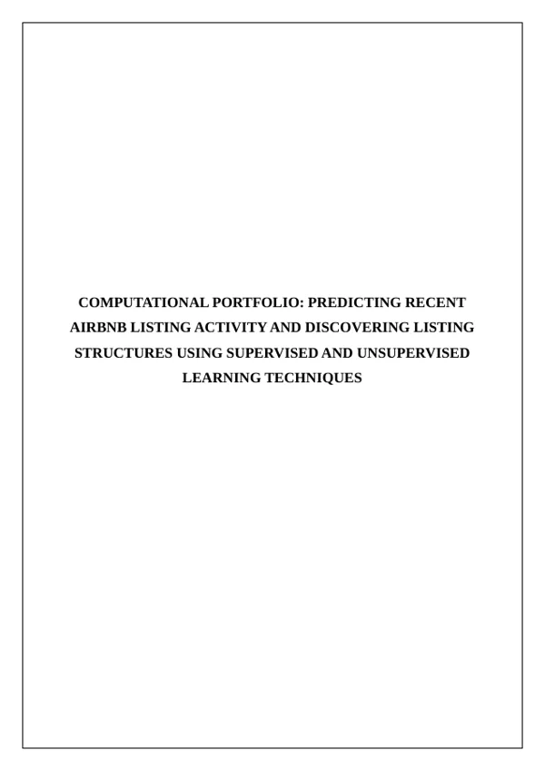
Machine learningAirbnb Listing Activity and Structures
Computational report on predicting listing activity and identifying listing structures using supervised and unsupervised learning.
49 pages · Research writing sample
View sample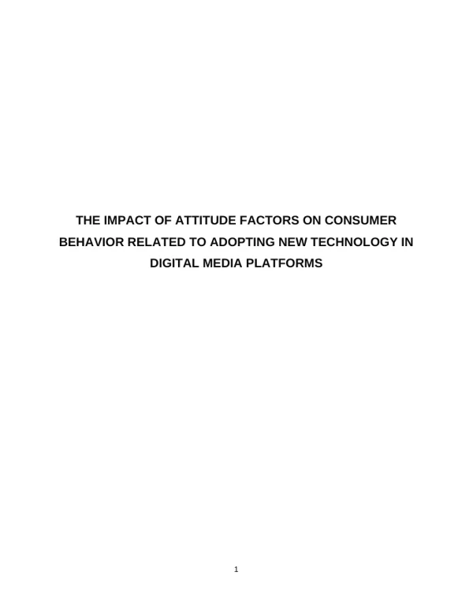
Consumer researchConsumer Attitudes and Digital Media Technology Adoption
Research writing examining attitude factors associated with adopting new technology on digital media platforms.
62 pages · Research writing sample
View sample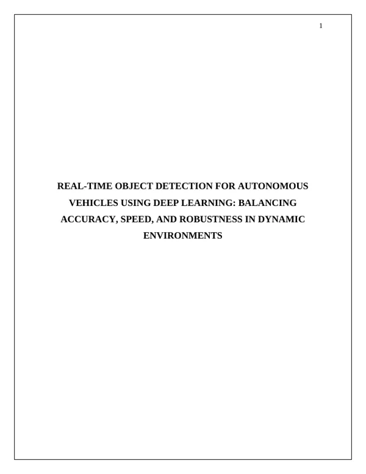
Computer visionReal-Time Object Detection for Autonomous Vehicles
Technical research examining accuracy, speed and robustness in deep learning object detection for dynamic driving environments.
77 pages · Research writing sample
View sample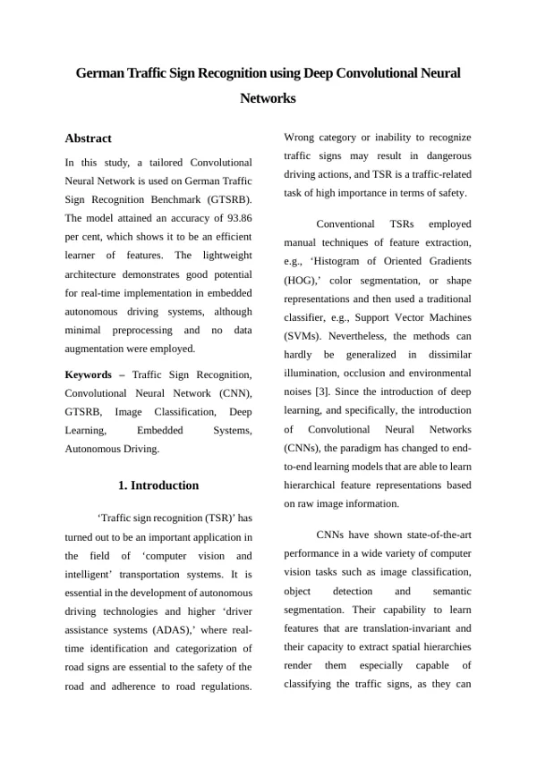
Computer visionGerman Traffic Sign Recognition with Deep CNNs
Technical report on German traffic sign recognition using deep convolutional neural networks.
13 pages · Research writing sample
View sample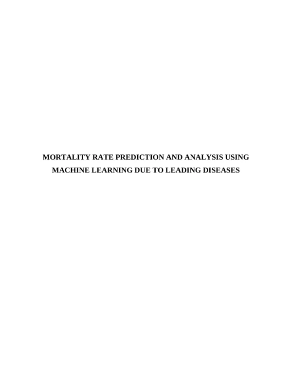
Healthcare analyticsMortality Rate Prediction Using Machine Learning
Research report on predicting and analysing mortality rates associated with leading diseases using machine learning.
59 pages · Research writing sample
View sampleResearch presentations
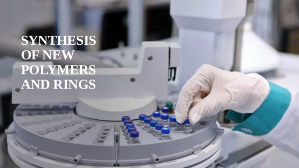
Scientific presentationSynthesis of New Polymers and Rings: Presentation
Presentation of research into new polymers and ring structures.
11 slides · Presentation sample
View presentation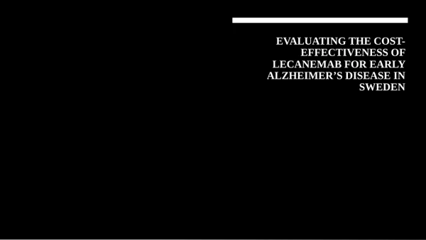
Health economics presentationLecanemab Cost-Effectiveness in Sweden
Research presentation evaluating lecanemab for early Alzheimer’s disease in Sweden.
15 slides · Presentation sample
View presentation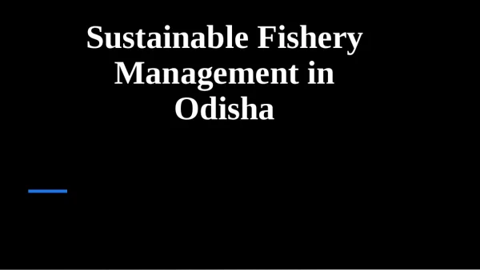
Sustainability presentationSustainable Fishery Management in Odisha
Presentation examining sustainable fishery management and coastal livelihoods in Odisha.
16 slides · Presentation sample
View presentation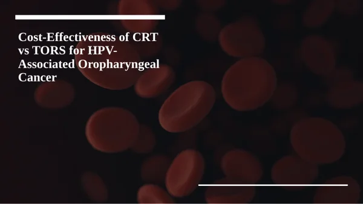
Health economics presentationCRT and TORS for HPV-Associated Oropharyngeal Cancer
Presentation comparing the cost-effectiveness of CRT and TORS for HPV-associated oropharyngeal cancer.
16 slides · Presentation sample
View presentationFrom requirements to delivery.
What we can develop
See what's included
- Technical articles, AI explainers and SEO content
- Documentation, requirements and business reports
- Research reports, literature review support and presentations
- Academic assignment planning, draft editing and referencing support
Businesses, researchers, publishers and students in India and international markets. Academic support focuses on developing your own work, following the requirements of your institution.
What you receive
See what's included
- An agreed outline and research approach
- Audience-focused draft with source attribution
- Technical review, editing and agreed revisions
Deliverables, review stages and timelines are agreed before work begins.
How the work progresses
We start with the reader, purpose and subject matter. I research the topic, agree the structure, develop the draft and refine it against your feedback.
The final toolset is selected for your requirements, existing systems and agreed scope.
- Google Docs
- Microsoft Word
- Grammarly
- Markdown
- Zotero
- WordPress
Your questions,
answered.
Who can hire Soumi Ganguly for technical content writing?
Businesses, software teams, publishers, researchers and professionals can hire Soumi Ganguly for technical content writing. She is based in India, has 4+ years of technical content writing experience and welcomes remote briefs from India, the UK, the USA and other international markets.
What does your technical writing service include?
Services include research-based technology articles, AI and data science explainers, technical documentation, requirements specifications, SEO website content, research reports and presentations. Scope and review stages are agreed for each brief.
Do you offer academic writing and assignment support?
Yes. Support includes assignment planning, outlines, draft feedback, editing, referencing guidance, literature review organisation and explanation of research methods. The work helps you develop your own draft and follow your institution’s academic requirements.
Can you connect research writing with data analysis?
Yes. Depending on the brief, I can support Python, R, IBM SPSS, Excel, Power BI or Tableau analysis and help explain the methodology, visualisations, findings and limitations in a structured report.
Where can I view your writing samples?
Full research reports and presentations appear in the Writing Samples section on this page. The separate Articles & Publications page links to published articles and their original sources.
How do I request a writing project from India or abroad?
Use the writing enquiry button or contact form. Include your subject, audience, deliverables, required format or word count, available material, referencing style if relevant, deadline and time zone. I review the brief before we agree scope and next steps.